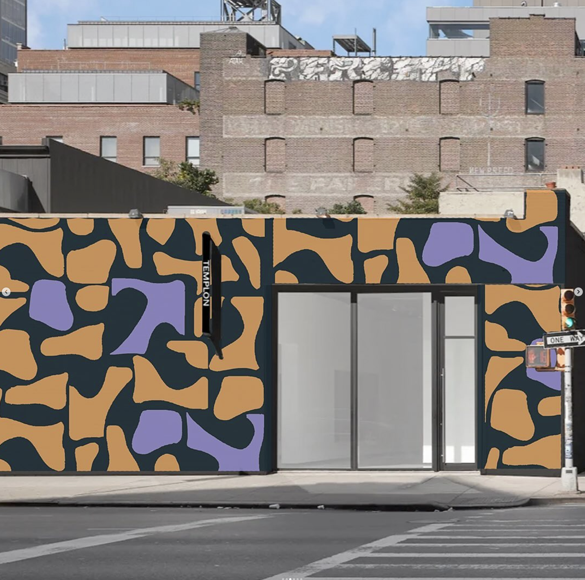
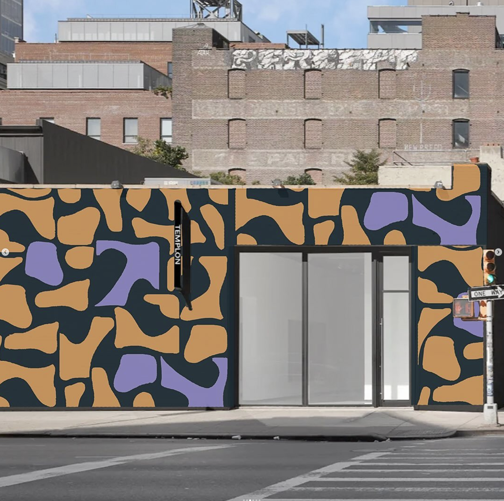
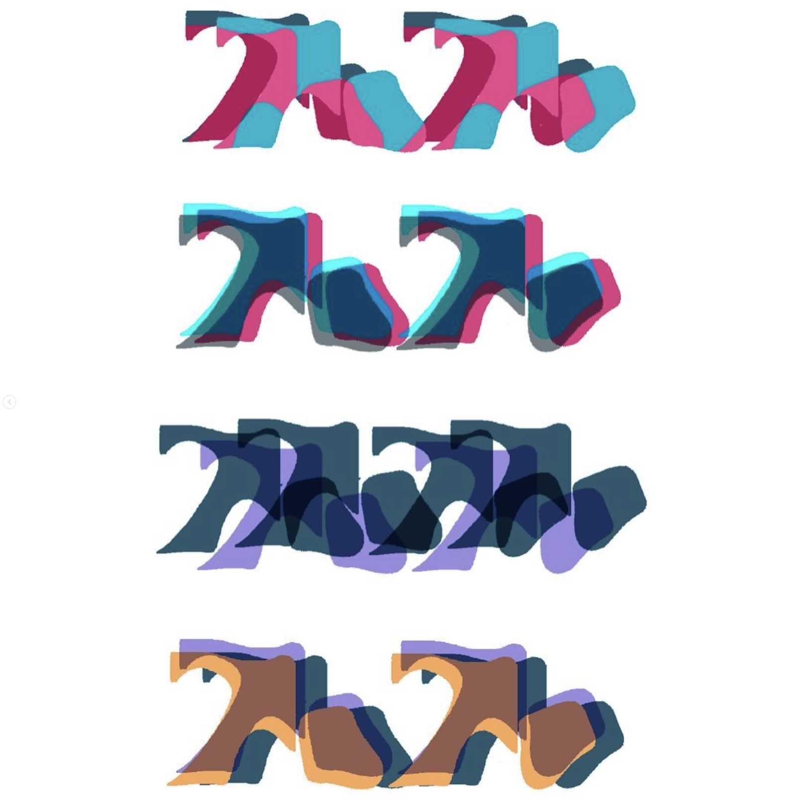
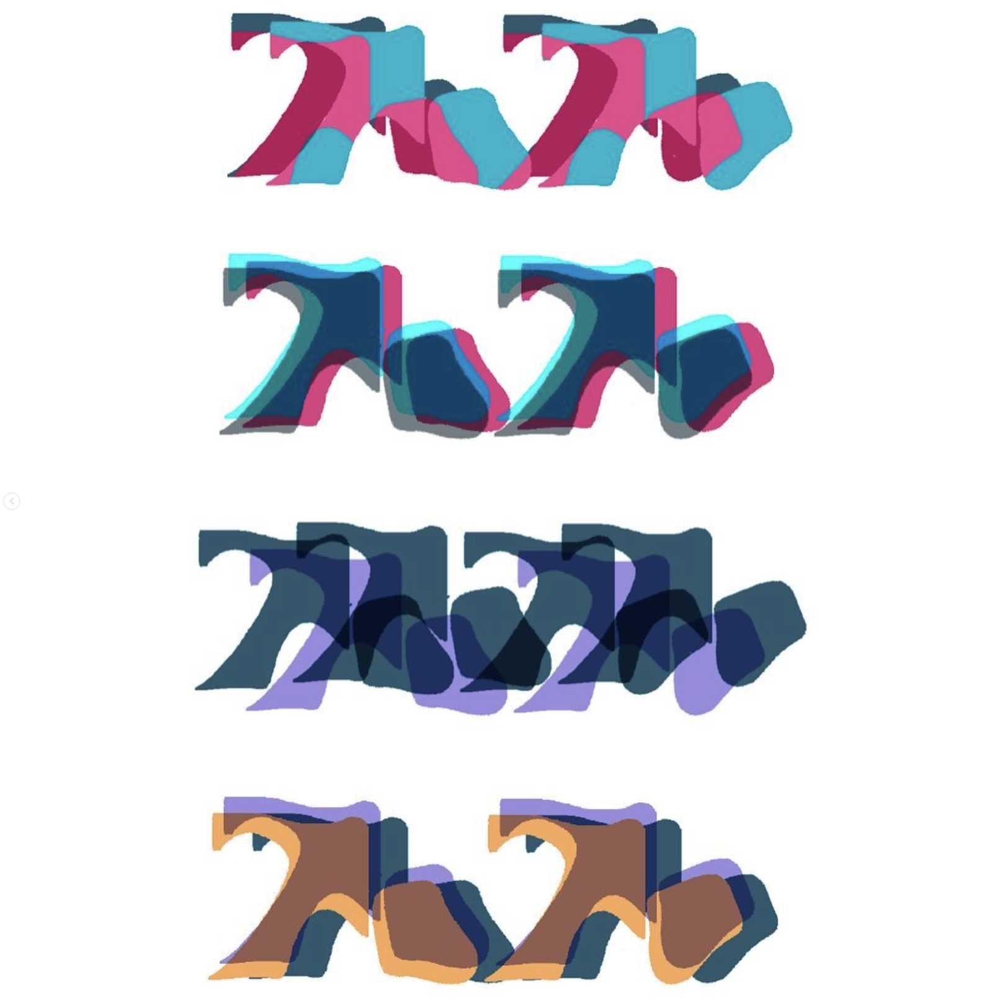

TaToo Art of Touch
Visual Identity
Tato: The Art of Touch is an exhibition rooted in the physical and emotional power of tactile experience. "Tato"—Portuguese for "touch"—goes beyond the literal sense; it speaks to care, intuition, and presence. The concept emerged from a desire to center a sense often overlooked in visual culture, especially in gallery contexts where touching is usually forbidden. This project reimagines space as something to be felt as much as seen. Materials were chosen for their textures and temperatures—warm wood, cool stone, soft fabric—to create a sensory dialogue between the visitor and the space itself. Every surface, threshold, and object was designed to slow people down, encouraging them to engage with their own bodies and the act of noticing.
The layout avoids rigid circulation paths, instead offering fluid movement and moments of pause. Installations invite close proximity, even contact, challenging traditional boundaries between viewer and artwork. Lighting and sound were treated like textures too—subtle and atmospheric, guiding people not just with sight, but with sensation. Tato is ultimately about intimacy: how we relate to the world through skin, memory, and instinct. It’s a quiet resistance to disconnection—a reminder that touch is not just a sense, but a form of language.
 


 
